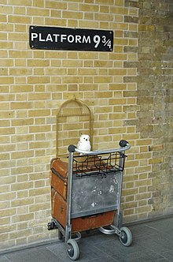
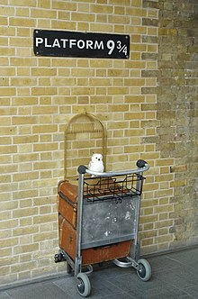
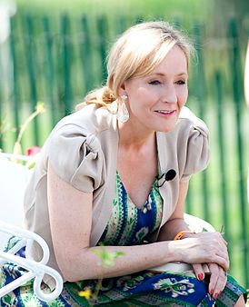
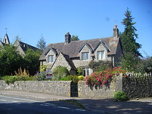
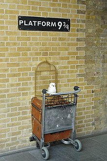

Джоан Роулинг (англ. Joanne Rowling; род. 31 июля 1965), известная под псевдонимами Дж. К. Роулинг (J. K. Rowling) и Роберт Гэлбрейт (Robert Galbraith), — британская писательница, сценаристка и кинопродюсер, наиболее известная как автор серии романов о Гарри Поттере. Книги о Гарри Поттере получили несколько наград и были проданы в количестве более 500 миллионов экземпляров. Они стали самой продаваемой серией книг в истории и основой для серии фильмов, ставшей третьей по кассовому сбору серией фильмов в истории. Джоан Роулинг сама утверждала сценарии фильмов, а также вошла в состав продюсеров последних двух частей.
